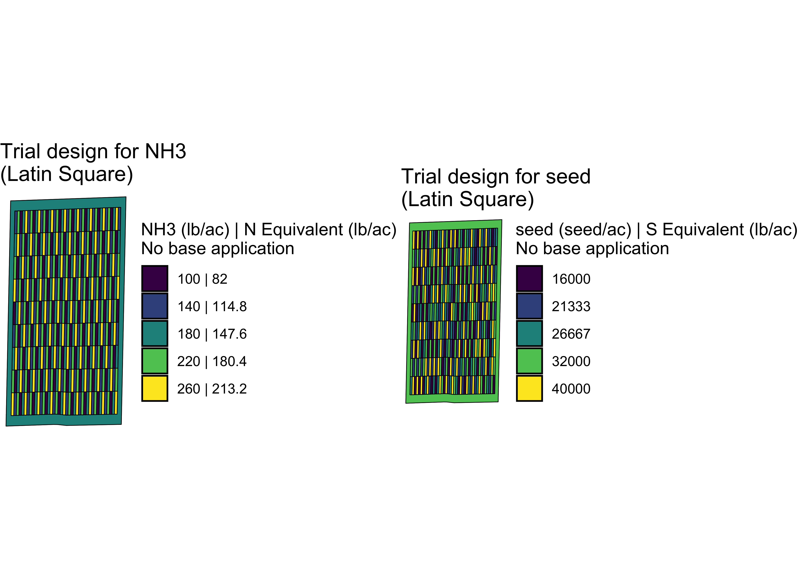

The ofpetrial package allows the user to design agronomic input experiments in a reproducible manner without using ArcGIS or QGIS. The vignette for this package is here.
Installation
You can install the development version of ofpetrial from Github:
devtools::install_github("DIFM-Brain/ofpetrial")Example
Here, we demonstrate how to use the ofpetrial package to create two-input on-farm experiment trial designs.
library(ofpetrial)Create experimental plots
We start with specifying plot and machine information for inputs using prep_plot_f(), which simply creates a data.frame of the specified information with some internal unit conversion of length (feet to meter).
seed_plot_info <-
prep_plot_f(
input_name = "seed",
machine_width = 60,
section_num = 24,
harvester_width = 30,
plot_width = 30
)
seed_plot_info
#> # A tibble: 1 × 10
#> input_name machine…¹ secti…² secti…³ harve…⁴ plot_…⁵
#> <chr> <dbl> <dbl> <dbl> <dbl> <dbl>
#> 1 seed 18.3 24 0.762 9.14 9.14
#> # … with 4 more variables: headland_length <dbl>,
#> # side_length <dbl>, min_plot_length <dbl>,
#> # max_plot_length <dbl>, and abbreviated variable
#> # names ¹machine_width, ²section_num,
#> # ³section_width, ⁴harvester_width, ⁵plot_width
n_plot_info <-
prep_plot_f(
input_name = "NH3",
machine_width = 30,
section_num = 1,
harvester_width = 30,
plot_width = 30
)
n_plot_info
#> # A tibble: 1 × 10
#> input_name machine…¹ secti…² secti…³ harve…⁴ plot_…⁵
#> <chr> <dbl> <dbl> <dbl> <dbl> <dbl>
#> 1 NH3 9.14 1 9.14 9.14 9.14
#> # … with 4 more variables: headland_length <dbl>,
#> # side_length <dbl>, min_plot_length <dbl>,
#> # max_plot_length <dbl>, and abbreviated variable
#> # names ¹machine_width, ²section_num,
#> # ³section_width, ⁴harvester_width, ⁵plot_widthNow that plot and machine specifications for the inputs are ready, we can create experiment plots based on them using make_exp_plots().
input_plot_info <- list(seed_plot_info, n_plot_info)
exp_data <-
make_exp_plots(
input_plot_info = input_plot_info,
boundary_data = system.file("extdata", "boundary-simple1.shp", package = "ofpetrial"),
abline_data = system.file("extdata", "ab-line-simple1.shp", package = "ofpetrial"),
abline_type = "free"
)The experiment plots created by make_exp_plots() is stored in exp_plots.
exp_data$exp_plots
#> [[1]]
#> Simple feature collection with 369 features and 3 fields
#> Geometry type: POLYGON
#> Dimension: XY
#> Bounding box: xmin: 352988.4 ymin: 4331460 xmax: 353376.6 ymax: 4332198
#> Projected CRS: WGS 84 / UTM zone 28N
#> First 10 features:
#> plot_id strip_id poly_line
#> 1 1 1 1_1
#> 2 2 1 1_1
#> 3 3 1 1_1
#> 4 4 1 1_1
#> 5 5 1 1_1
#> 6 6 1 1_1
#> 7 7 1 1_1
#> 8 8 1 1_1
#> 9 9 1 1_1
#> 10 1 2 1_1
#> geometry
#> 1 POLYGON ((352997.6 4331460,...
#> 2 POLYGON ((352999 4331540, 3...
#> 3 POLYGON ((353000.5 4331621,...
#> 4 POLYGON ((353001.9 4331702,...
#> 5 POLYGON ((353003.3 4331782,...
#> 6 POLYGON ((353004.8 4331863,...
#> 7 POLYGON ((353006.2 4331943,...
#> 8 POLYGON ((353007.7 4332024,...
#> 9 POLYGON ((353009.1 4332104,...
#> 10 POLYGON ((353006.7 4331460,...
#>
#> [[2]]
#> Simple feature collection with 369 features and 3 fields
#> Geometry type: POLYGON
#> Dimension: XY
#> Bounding box: xmin: 352988.4 ymin: 4331460 xmax: 353376.6 ymax: 4332198
#> Projected CRS: WGS 84 / UTM zone 28N
#> First 10 features:
#> plot_id strip_id poly_line
#> 1 1 1 1_1
#> 2 2 1 1_1
#> 3 3 1 1_1
#> 4 4 1 1_1
#> 5 5 1 1_1
#> 6 6 1 1_1
#> 7 7 1 1_1
#> 8 8 1 1_1
#> 9 9 1 1_1
#> 10 1 2 1_1
#> geometry
#> 1 POLYGON ((352997.6 4331460,...
#> 2 POLYGON ((352999 4331540, 3...
#> 3 POLYGON ((353000.5 4331621,...
#> 4 POLYGON ((353001.9 4331702,...
#> 5 POLYGON ((353003.3 4331782,...
#> 6 POLYGON ((353004.8 4331863,...
#> 7 POLYGON ((353006.2 4331943,...
#> 8 POLYGON ((353007.7 4332024,...
#> 9 POLYGON ((353009.1 4332104,...
#> 10 POLYGON ((353006.7 4331460,...exp_data$exp_plots is a list and you can access the individual experiment plots (an sf object) like this.
exp_data$exp_plots[[1]]
#> Simple feature collection with 369 features and 3 fields
#> Geometry type: POLYGON
#> Dimension: XY
#> Bounding box: xmin: 352988.4 ymin: 4331460 xmax: 353376.6 ymax: 4332198
#> Projected CRS: WGS 84 / UTM zone 28N
#> First 10 features:
#> plot_id strip_id poly_line
#> 1 1 1 1_1
#> 2 2 1 1_1
#> 3 3 1 1_1
#> 4 4 1 1_1
#> 5 5 1 1_1
#> 6 6 1 1_1
#> 7 7 1 1_1
#> 8 8 1 1_1
#> 9 9 1 1_1
#> 10 1 2 1_1
#> geometry
#> 1 POLYGON ((352997.6 4331460,...
#> 2 POLYGON ((352999 4331540, 3...
#> 3 POLYGON ((353000.5 4331621,...
#> 4 POLYGON ((353001.9 4331702,...
#> 5 POLYGON ((353003.3 4331782,...
#> 6 POLYGON ((353004.8 4331863,...
#> 7 POLYGON ((353006.2 4331943,...
#> 8 POLYGON ((353007.7 4332024,...
#> 9 POLYGON ((353009.1 4332104,...
#> 10 POLYGON ((353006.7 4331460,...We can visualize the layout of the experiment plots using viz_layout().
viz(exp_data, type = "layout", abline = TRUE)Assign rates
Let’s now assign input rates to the experimental plots we just created. Before doing so, we need to prepare rate information for both inputs using prep_rates().
#!===========================================================
# ! Assign rates
# !===========================================================
seed_rate_info <-
prep_rate(
plot_info = seed_plot_info,
gc_rate = 32000,
unit = "seed",
min_rate = 16000,
max_rate = 40000,
num_rates = 5,
design_type = "jcls"
)
#> Trial rates were not directly specified via the {rates} option, so the trial rates will be calculated using min_rate, max_rate, gc_rate, and num_rates
seed_rate_info
#> # A tibble: 1 × 10
#> input…¹ desig…² gc_rate unit rates min_r…³ max_r…⁴
#> <chr> <chr> <dbl> <chr> <list> <dbl> <dbl>
#> 1 seed jcls 32000 seed <NULL> 16000 40000
#> # … with 3 more variables: num_rates <dbl>,
#> # rank_seq_ws <list>, rank_seq_as <list>, and
#> # abbreviated variable names ¹input_name,
#> # ²design_type, ³min_rate, ⁴max_rate
n_rate_info <-
prep_rate(
plot_info = n_plot_info,
gc_rate = 180,
unit = "lb",
rates = c(100, 140, 180, 220, 260),
design_type = "ls",
rank_seq_ws = c(5, 4, 3, 2, 1)
)
n_rate_info
#> # A tibble: 1 × 10
#> input_…¹ desig…² gc_rate unit rates min_r…³ max_r…⁴
#> <chr> <chr> <dbl> <chr> <lis> <lgl> <lgl>
#> 1 NH3 ls 180 lb <dbl> NA NA
#> # … with 3 more variables: num_rates <dbl>,
#> # rank_seq_ws <list>, rank_seq_as <list>, and
#> # abbreviated variable names ¹input_name,
#> # ²design_type, ³min_rate, ⁴max_rateWe can now use assign_rates() to assign rates to experiment plots (see this vignette for other design options and this vignette for changing rates manually.).
trial_design <- assign_rates(exp_data, rate_info = list(seed_rate_info, n_rate_info))
#> Trial rates were not directly specified, so the trial rates were calculated using min_rate, max_rate, gc_rate, and num_ratesHere is the visualization of the trial design done by viz.
viz(trial_design)
Along with the spatial pattern of the input rates, the applicator/planter ab-line and harvester ab-line are drawn by default.
Diagnose the trial design
The ofpetrial package offers several functions to check the soundness of a trial design (see this vignette for more details and examples).
Here, let’s check the correlation between the seed and NH3 rates.
(
cor_inputs <- check_ortho_inputs(trial_design)
)
#> [1] 0.4980795The correlation coefficient is 0.5.
Write the trial design files for implementation
Once you are satisfied with the trial design adn the location of the ab-lines, you can write out all the necessary files as shape files for the machine operators to actually implement the trial.
write_trial_files(td, zip = TRUE, zip_name = "td-collection")Here, all the shape files (trial dsign, applicator/planter ab-line, and harvester ab-line) are packed in a zipped folder, named “td-collection.zip”.
Acknowledgement
This project was funded in part by a United States Department of Agriculture—National Institute of Food and Agriculture (USDA—NIFA) Food Security Program Grant (Award Number 2016-68004-24769) and by United States Department of Agriculture (USDA) -Natural Resources Conservation Service (NRCS), Commodity Credit Corporation (CCC), Conservation Innovation Grants On-Farm Conservation Innovation Trials (Award Number USDA-NRCS-NHQ-CIGOFT-20-GEN0010750).